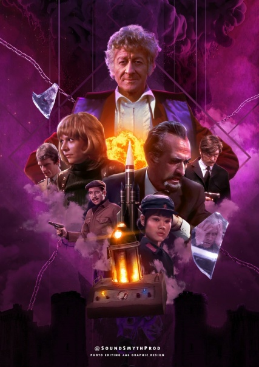
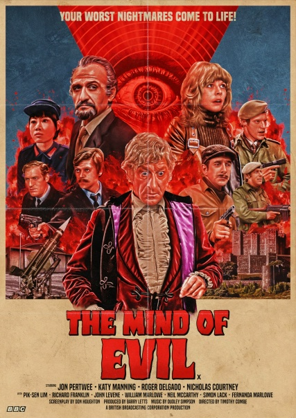

Эра Третьего Доктора (8 сезон)
<<< НАЗАД ||| 2. Разум зла ||| ДАЛЬШЕ >>>
Субтитры: Русские и Английские |  |
|---|---|
с обновлением визуальных эффектов (cunningmunki) Субтитры: отсутствуют | |
Дата выхода: 30 января - 6 марта 1971
Формат: 6 эпизодов по 25 мин.
| Все эпизоды сохранились в ч/б * Первый эпизод раскрашен вручную * В 2-6 эпизодах цвет восстановлен по хроматографическим точкам |
|---|
 |  помощник |  помощник |  помощник |
Доктор и Джо приезжают в Стангмурскую тюрьму, чтобы изучить машину Келлера — устройство для «очистки» разума преступников. Но за технологией скрывается нечто опасное: внутри машины живёт инопланетный паразит, питающийся страхом. Тем временем Мастер готовит масштабную провокацию — он хочет сорвать международную мирную конференцию с помощью ракеты с нервно‑паралитическим газом. Доктор вынужден действовать на два фронта: сдерживать бунт в тюрьме и мешать планам Мастера. Главная угроза здесь не в грубой силе, а в том, как легко можно подчинить волю человека — и Доктор бросает вызов самой идее управления чужим сознанием.
VHS (ч/б) - 1998 | DVD - 3 июня 2013 |  Blu-ray - 8 марта 2021 * Версия в нашей группе |
|---|





